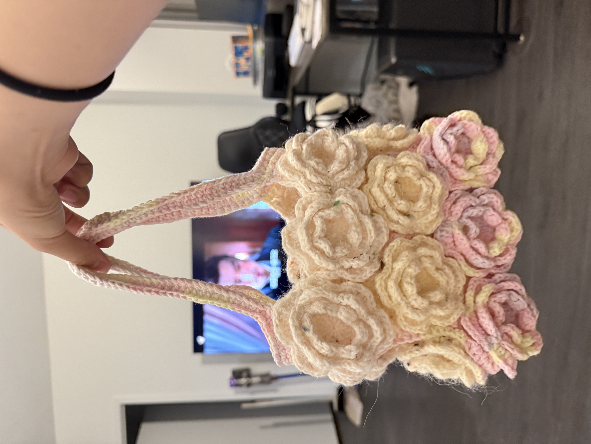

About Me
Hi! I'm a graduate student in the GIST program at USC. My undergraduate background is in Finance. I became interested in GIS because I wanted to learn how data and spatial analysis can be used to understand real-world problems and support better decisions.
Outside of school, I enjoy knitting, watching movies, and listening to music. I also enjoy meeting new people and making new friends. Recently, I have been preparing for my job search and exploring different career opportunities.
Education
I studied Finance engineering at my undergraduate. But I found that I am not interested in this major. So I decided to change my major to GIST. Now I am studying GIST at USC for my master's degree.
My Interests

In my free time, I enjoy knitting, baking, watching movies, and listening to music. Knitting is one of my favorite hobbies because I enjoy making things by hand. I also love traveling, exploring new places, and trying different foods. Recently, I have been especially interested in finding and trying new dessert recipes.
My Goals
After graduation, I hope to find a job where I can use my skills in data analysis, GIS, and business. I am still exploring different career opportunities and learning more about what I enjoy and what I am good at.
In the future, I would also love to start my own business. Since baking is one of my favorite hobbies, opening a small bakery or dessert shop is something I would like to try someday. For now, I am working on improving my skills in data analysis, business, and communication.
Get to Know Me
Click the button to see a message.